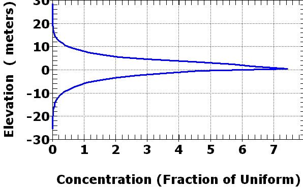

Required Antenna Height Map--Speed Comparison
| Fast algorithm (<1 sec). A radial is drawn to each point on the perimeter of the DEM, and all interior points lie along at least one radial. The last radial drawn will overwrite any previous values. Note moire patterns in the flat areas, where multiple radials through the same point, with slightly different azimuths, produce different results. In this case, the DEM is 374x465, and the number of radials is 2*(374+465) = 1678. |
|
| Rigorous Algorithm (112 sec). Required antenna computed for every point. In this case, the DEM is 374x465, and the number of computations is (374*465) = 173,910. This is a factor of 103 more than the fast algorithm. While the average length will be half that in the fast algorithm, radial overhead and differences in optimization lead to the time difference. |
|
| Differences between two algorithms. Note the moire patterns, and the radial patterns where sharp peaks have shadows. The differences follow radials, where multiple radials project onto single points. |
|
 |
Histogram of elevation differences. The maximum difference of about 30 m compares to a maximum value over 2000 m. |
Most graphics removed. This had not been looked at in over 20 years. If you want to use this, experiment.
Last revision 1/28/2023